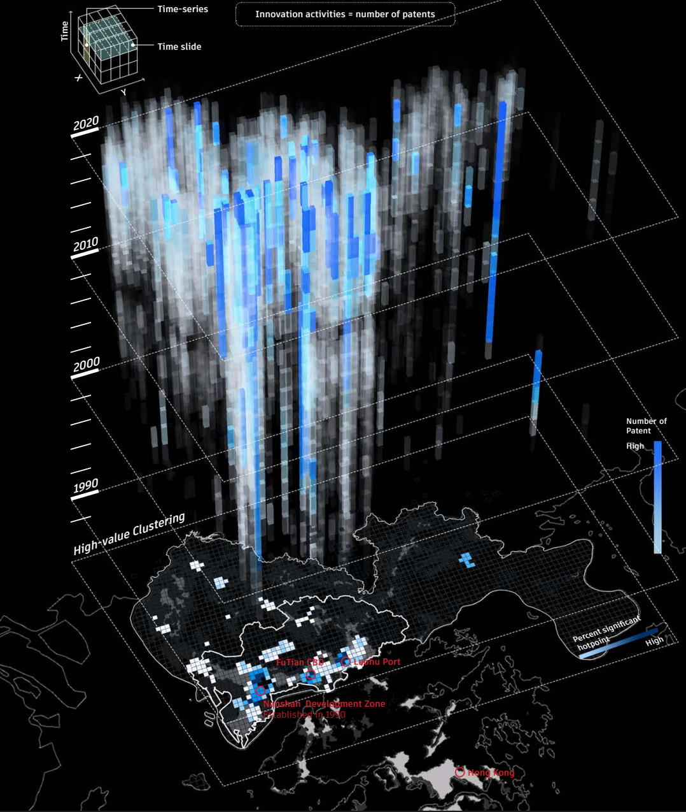
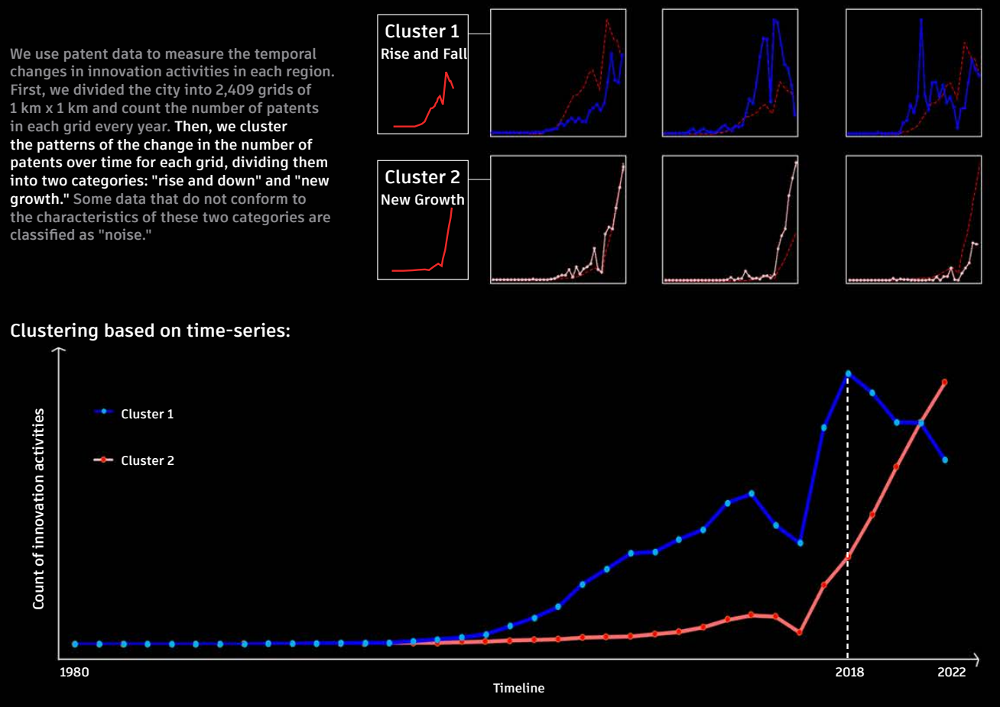
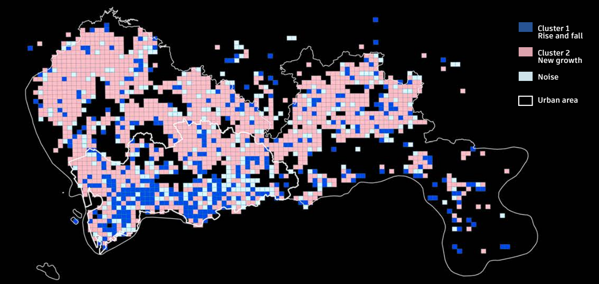
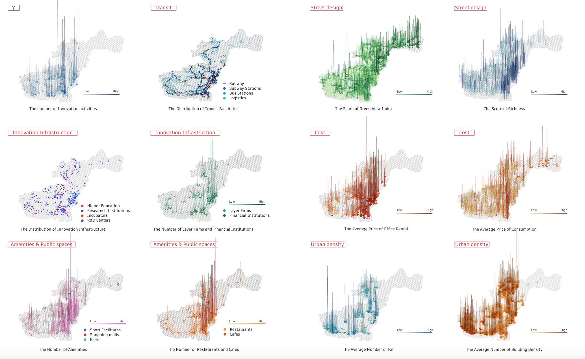
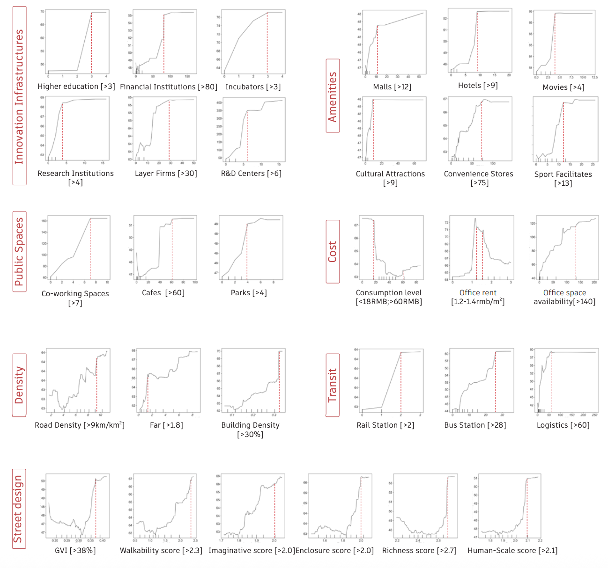
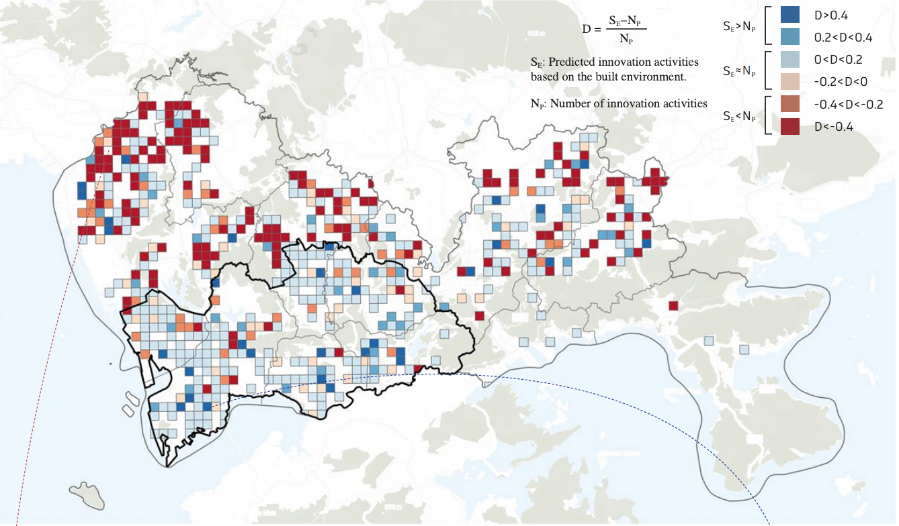
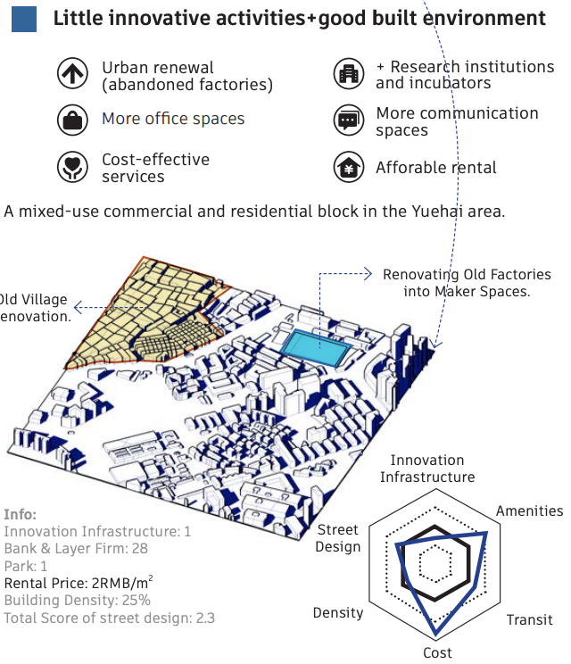
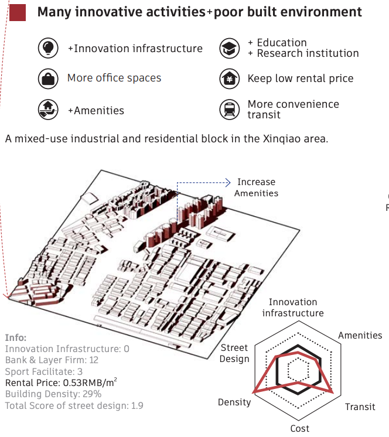
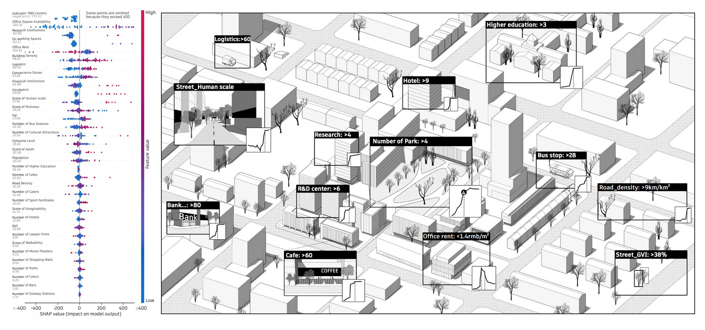
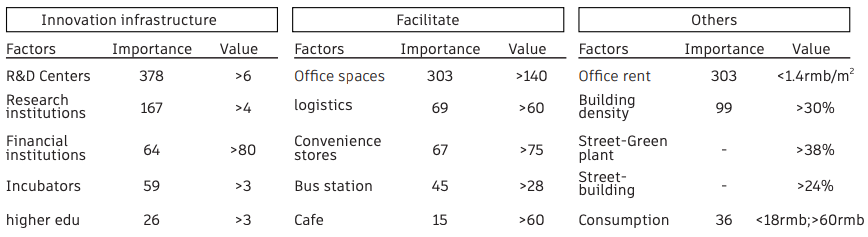

项目简介：通过对专利数据进行时空分析，研究发现深圳的创新活动有从城区外溢到郊区的趋势。郊区该如何把握机遇，培育和吸引更多的创新公司和人才？本研究结合了POI，街景等多种城市大数据，使用可解释机器学习模型进行深入分析，探究影响因素和创新活动的非线性关系。研究基于创新基础设施、公服配套、交通、成本和建成环境五大维度评估郊区哪里成为新的创新中心的潜力大，哪个方面需要提升，并输出了对应的提升策略。
我们使用专利数量来代表一个地方的创新活动，专利越多，说明这个地方的创新活动越多
我们使用1千米*1千米的网格将深圳市切分成2400多个网格单元
基于时空聚类的分析，我们总结了深圳1985-2020年创新的分布模式：（1）创新活动集中在“关内”地区（2）创新活动的分布从集中到散布

深圳创新活动的时空分布
g聚类分析发现了两种趋势：有的地方创新活动在最近几年下降了（下图的Cluster 1）；有的地方创新活动一直表现平平，但最近几年增长很快（下图的Cluster 2）。

创新活动的两种趋势
当我们把这两种趋势在地图上可视化的时候，我们发现呈现下降趋势的地方（地图中蓝色的网格）集中在“关内”，呈现增长趋势的地方（地图中粉红色的网格）集中在郊外。说明创新活动正在从城区外溢到郊区（i.e. 有创新能力的公司正在向郊区迁移; 郊区公司创新能力增强）。

两种趋势的分布
在创新外溢的背景下，郊区的决策者面临的核心问题是：如何把握机遇，吸引和培育更多的创新公司和人才，成为城市新的创新增长极？
创新城市的相关理论表明，创新活动主要依赖于以下五个方面：创新基础设施（科研中心、孵化器、金融机构等）、公服配套、交通、成本、城市建成环境

创新活动影响因素可视化
研究主要使用树模型（Tree-based Models）进行建模，包括决策树、随机森林以及Boosting系列的GBM，XGBoost等，还选择传统的线性模型以及支持向量机（SVM）作为参考，基于R方，MSE和RMSE选择最佳模型。最终选择随机森林算法，R方=0.71，意味着71%的观察点可以被该模型解释。
在传统的线性回归中，我们认为一个变量增加，另一个变量也必然增加，这并不符合现实情况。现实中，大多数变量都有边际效益——当增长过了某个“门槛”数值后，增长会放缓；有些时候甚至会“物极必反”——变量随着另一个变量的增加，先增加后减少。为了提供更加真实可用的见解，捕抓变量间非线性的关系，研究使用了可解释机器学习工具SHAP，量化每个创新影响因素的“门槛”与非线性效应。
大多数影响因素都有“门槛”，到达“门槛”后几乎不再增长。这对于在有限资源下制定支持创新的策略具有重要意义——将资源投放在最需要的地方，而不是一味追求某个指标的上升。还有的影响因素控制在一定区间时对创新活动的贡献最大，如租金。

局部关系依赖图，展示影响因素和创新活动的非线性关系
通过空间残差图，研究定位了创新预测结果和实际情况存在gap的地方。这些偏离回归模型的地方说明模型中的变量未能完全解释该区域的创新活动，存在未被捕抓的因素：如政策支持、历史产业集群、投资环境、企业总部等。

创新活动的空间残差图
蓝色区域：预测创新 > 实际创新
地区特征：创新潜力未被释放

红色区域：预测创新 < 实际创新
地区特征：特殊因素驱动创新

基于以上分析结果，研究从创新基础设施、公服配套、交通、成本、城市建成环境五个维度，为郊区打造创新城区提供策略参考。R&D中心、办公空间的可获得性、研究机构、创客空间和办公租金是最重要的五个因素。

创新支持因素的重要性（左）和创新城区策略效果（右）
研究结果为打造创新城区提供指标参考：当某个指标达到其门槛值后，应该关注其他指标的提升，从而实现精准提升。

创新支持因素指标
Project Overview: Through spatio-temporal analysis of patent data, research reveals a trend of innovation activities spilling over from urban districts to suburban areas in Shenzhen. How can suburban areas seize this opportunity to cultivate and attract more innovative companies and talent? This study integrates diverse urban big data sources—including Points of Interest (POI) and street-level imagery—and employs explainable machine learning models for in-depth analysis. It explores the nonlinear relationships between influencing factors and innovation activities. The study evaluates suburban areas' potential to become new innovation hubs across five dimensions: innovation infrastructure, public services, transportation, costs, and built environment. It identifies areas requiring improvement and generates corresponding enhancement strategies.
We use the number of patents to represent a region's innovation activity, with more patents indicating greater innovation.
We divided Shenzhen into over 2,400 grid cells using a 1km × 1km grid.
Based on spatio-temporal clustering analysis, we summarized Shenzhen's innovation distribution patterns from 1985 to 2020:
(1) Innovation activity is concentrated in the “Inner Shenzhen” area.
(2) The distribution of innovation activity has shifted from concentrated to dispersed.
Spatial and Temporal Distribution of Innovation Activities in Shenzhen
Cluster analysis revealed two distinct trends: some regions have experienced a decline in innovation activity in recent years (Cluster 1 in the figure below); others have maintained relatively stable innovation activity but have seen rapid growth in recent years (Cluster 2 in the figure below).
Two Trends in Innovation Activities
When we visualize these two trends on a map, we observe that areas showing a declining trend (blue grid on the map) are concentrated within the urban core, while areas exhibiting growth (pink grid) cluster in the suburbs. This indicates that innovation activity is spilling over from the city center to the outskirts—meaning innovative companies are relocating to suburban areas, and suburban firms are enhancing their innovation capabilities.
Distribution of the Two Trends
Modeling Analysis
Against the backdrop of innovation spillover, the core challenge facing suburban policymakers is: How can they seize opportunities to attract and nurture more innovative companies and talent, thereby becoming new hubs of urban innovation growth?
Relevant theories on innovation cities indicate that innovation activities primarily depend on five key factors: innovation infrastructure (research centers, incubators, financial institutions, etc.), public service support, transportation, costs, and the built urban environment.
Visualization of Factors Influencing Innovation Activities
The study primarily employed tree-based models for modeling, including decision trees, random forests, and boosting algorithms such as GBM and XGBoost. Traditional linear models and support vector machines (SVM) were also selected for comparison. The optimal model was chosen based on R-squared, MSE, and RMSE. The random forest algorithm was ultimately selected, achieving an R-squared value of 0.71, indicating that 71% of the observations could be explained by this model.
In traditional linear regression, we assume that an increase in one variable necessarily leads to an increase in another, which does not align with reality. In practice, most variables exhibit marginal effects—growth slows after exceeding a certain “threshold” value. Sometimes, the opposite occurs: a variable increases initially but then decreases as another variable increases. To provide more actionable insights and capture these nonlinear relationships, the study employed the interpretable machine learning tool SHAP to quantify the “threshold” and nonlinear effects of each innovation driver.
Most factors exhibit a “threshold” beyond which growth plateaus. This is crucial for designing innovation support strategies with limited resources—allocating resources where they matter most, rather than chasing arbitrary metric increases. Other factors, like rent, yield maximum contribution to innovation activity when maintained within specific ranges.
Partial Relationship Dependency Diagram, illustrating the nonlinear relationship between influencing factors and innovation activities
Through spatial residual maps, the study identified gaps between innovation forecast outcomes and actual conditions. These deviations from the regression model indicate that the variables within the model fail to fully explain innovation activities in the region, suggesting the presence of unaccounted factors such as policy support, historical industrial clusters, investment environments, and corporate headquarters.
Spatial Residual Map of Innovation Activities
Blue Zone: Predicted Innovation > Actual Innovation
The conditions for innovation are excellent.
There should be a great deal of innovation activity, but in reality, innovation activity is insufficient.
Potential lack of policy support
Urban renewal
Providing affordable rental space
Innovation resources remain untapped
Red Zone: Predicted Innovation < Actual Innovation
The conditions for innovation are not particularly favorable.
Models predict low levels of innovation activity, while actual innovation activity is high.
Planning Strategy: Supporting Growth
Enhance support for existing innovation models
Strengthen innovation cluster effects
Maintain low costs (rent)
Optimize transportation and public services to support higher-intensity innovation activities
Based on the above analysis, this study provides strategic recommendations for developing suburban innovation districts across five dimensions: innovation infrastructure, public service facilities, transportation, costs, and built environment. The five most critical factors are the availability of R&D centers and office space, research institutions, maker spaces, and office rental rates.
Importance of Innovation Support Factors (Left) and Effectiveness of Innovation District Strategies (Right)
Research findings provide benchmark references for developing innovative districts: Once a metric reaches its threshold value, attention should shift to enhancing other metrics to achieve targeted improvements.
Innovation Support Factors Index
[{"start":1,"end":18,"color":"#010101"}] [{"start":1,"end":19,"color":"#010101"}]